Sipply: details and the way in
v4.6, 23 Oct 2026. Two questions: which delicate red detail system makes the app less bland, and what motion carries the intro film into the app. Four detail systems and three transitions were built, scored by three judges (taste, craft, build, out of 10 each), and the top two of each were refined once.
Jan: “a short part after the intro so instead of just disappearing … it has some sort of motion design that transitions into the app … the red accent, but delicate details, making it appear as if it was simple yet complex.” Standing rule from 9 Oct: less stuff. Every mark below is ornament, not information.
The details
Today, for comparison (v4.5, campari, new wordmark, ink tab line)
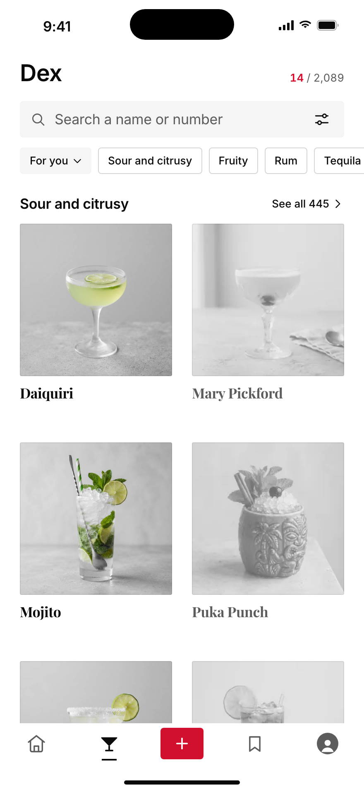
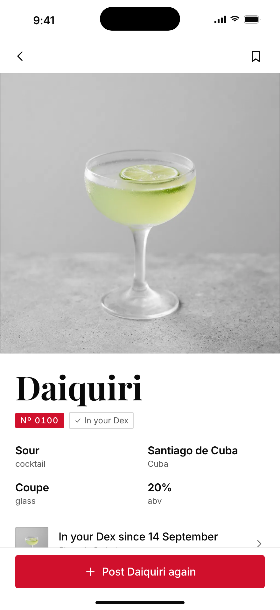
Pen marks v2
judges 21 / 30 · taste 8 · craft 6 · build 7The logo's paint pen comes back at hairline weight: a drawn rule under Home's stories, a swash under tab-root titles (Dex, Profile), and one drip off the caught Nº plate. One mark per screen.
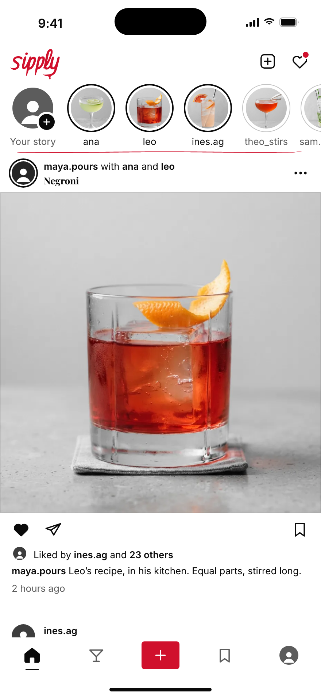
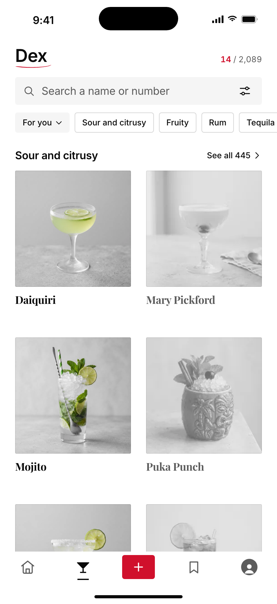
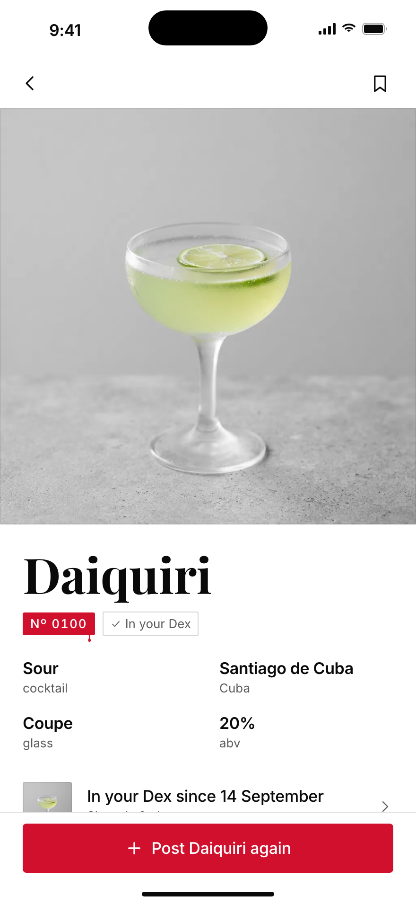
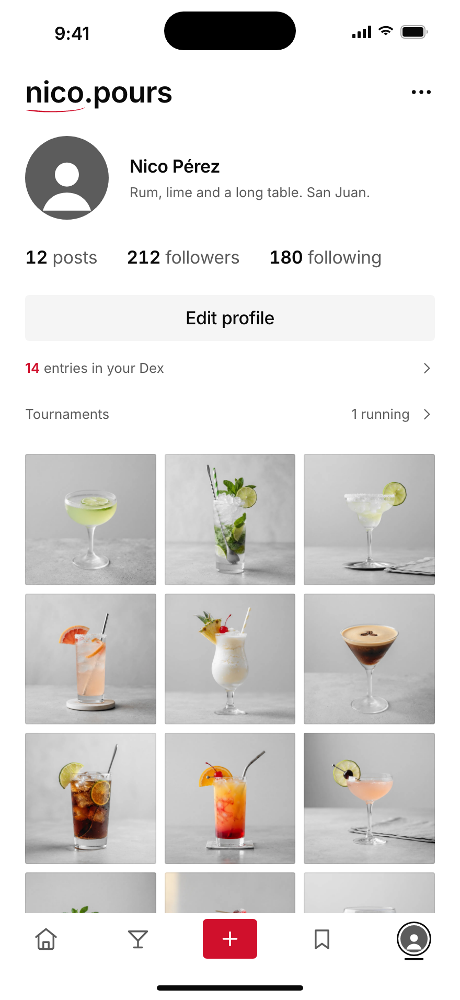
At 3x, 1:1, before and after
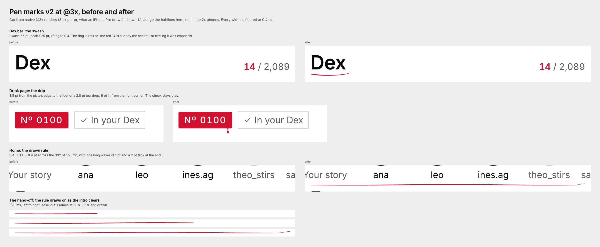
Bar ledger v2
judges 21.5 / 30 · taste 5.5 · craft 8 · build 8A bartender's ruled ledger: one straight Campari ruling, 2 device px, placed where a ledger printer would put one. A double rule under Home's stories, a head rule under Dex sections, margin and column rules on the drink page and Profile, a 24 pt entry rule closing each post.
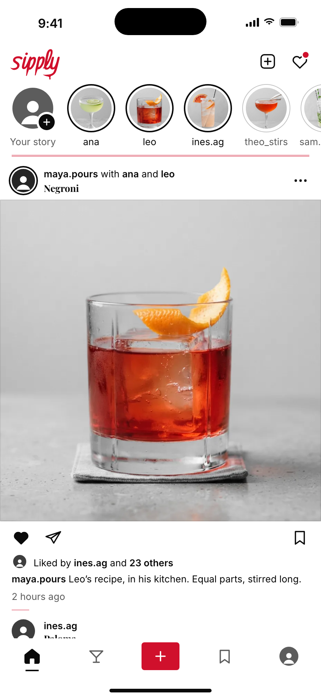
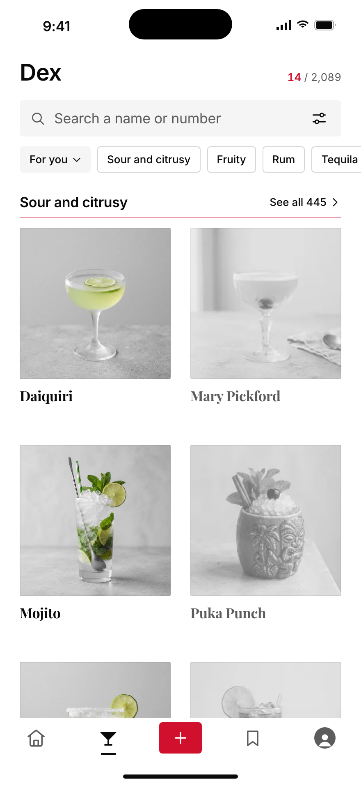
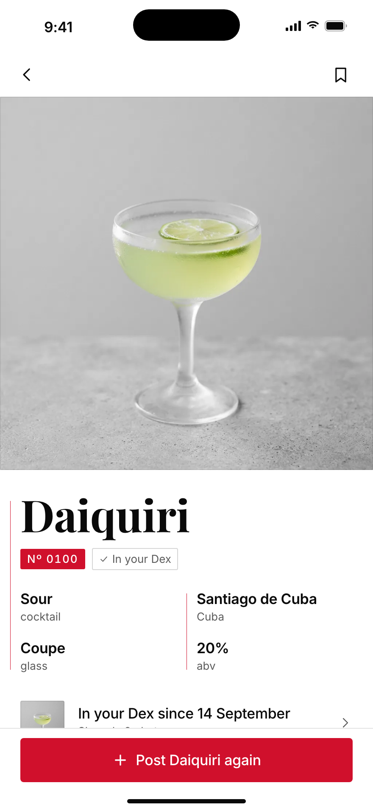
At 3x, 1:1, before and after
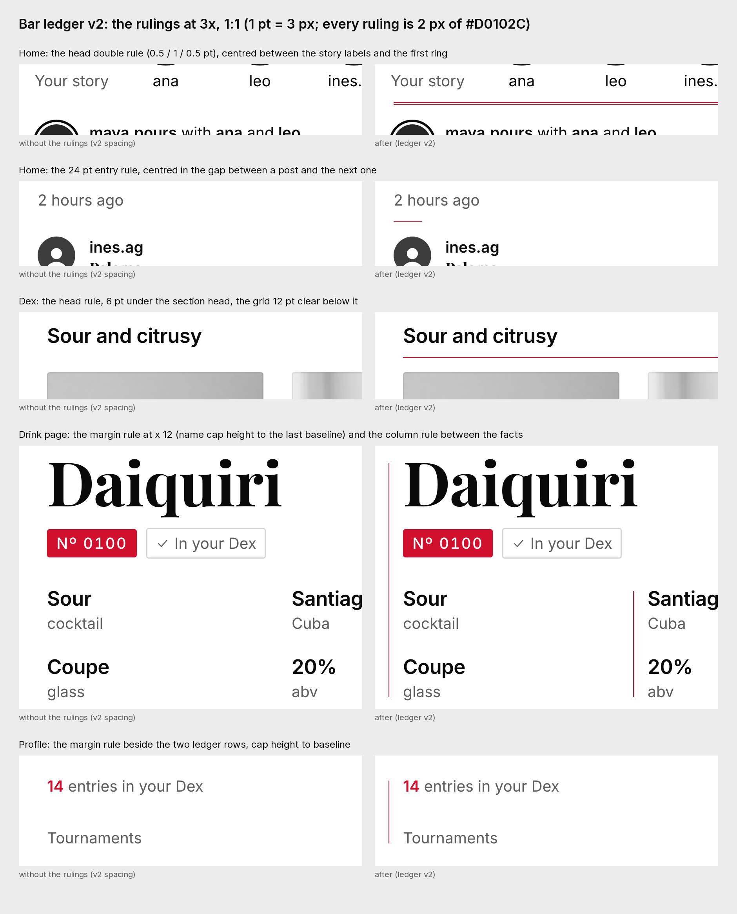
Today vs both finalists, Home and Drink
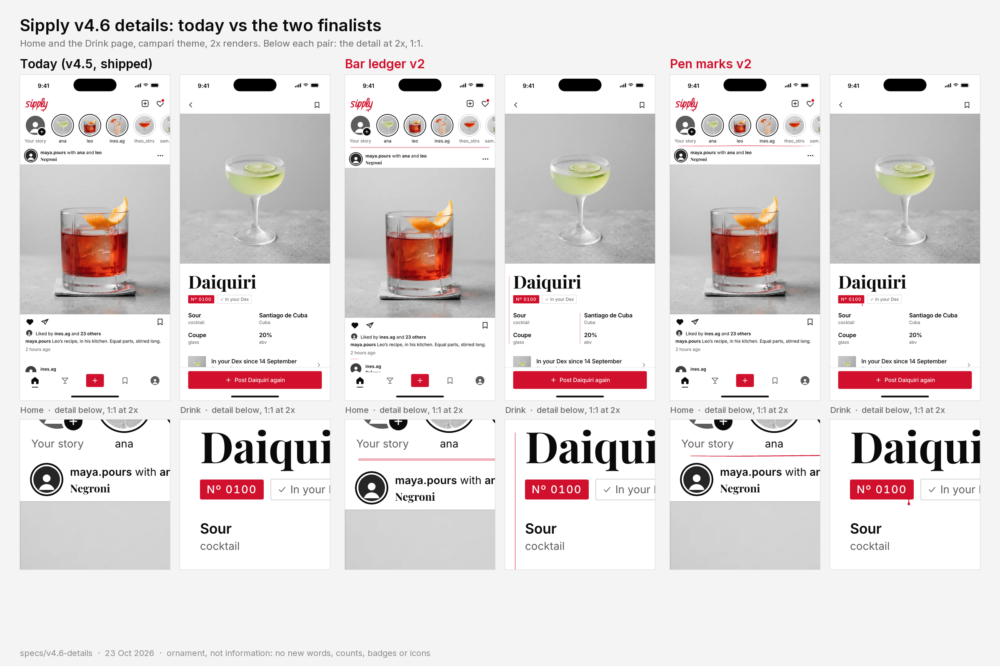
Also built, not taken forward
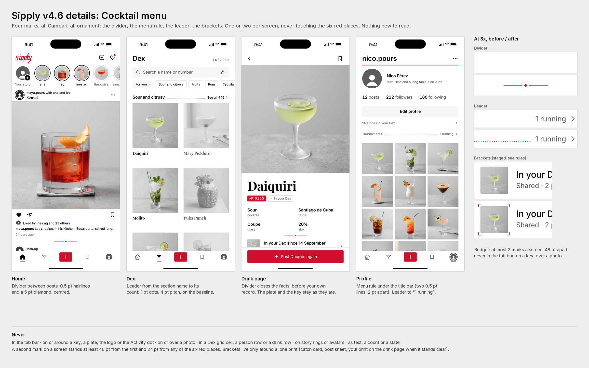
Cocktail menu 19.5 / 30
A diamond divider (the most delicate single mark of the four), dotted leaders and corner brackets. Leaders point the eye at counts, brackets read as a camera viewfinder.
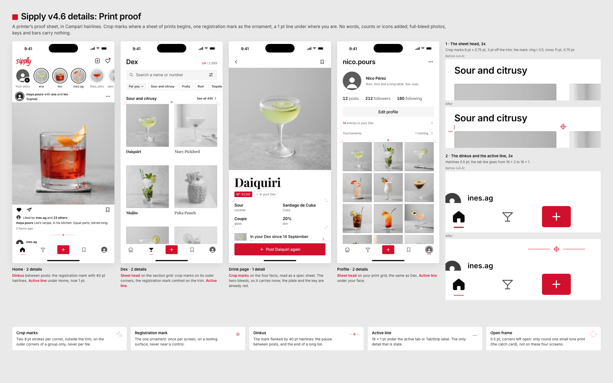
Print proof 16 / 30
Crop and registration marks. Clever for designers, but they read as rendering glitches, the crosshair reads as a target, and it needs a seventh accent place.
The way in: intro to app
Each preview starts on the film's last frame (the finished wordmark on white) and ends on Home. Looping, muted, at 390 × 844 pt. transitions.mp4 plays both back to back.
Dock v2
judges 23 / 30 · taste 8 · craft 7.5 · build 7.5The wordmark you just watched flies up and becomes the logo in Home's bar (600 ms), while the page fills from the bottom up: tab bar and keys at 160 ms, feed at 240 ms, stories at 360 ms. Pen's drawn rule signs the page under the stories from 560 to 840 ms. Done in about 0.9 s.
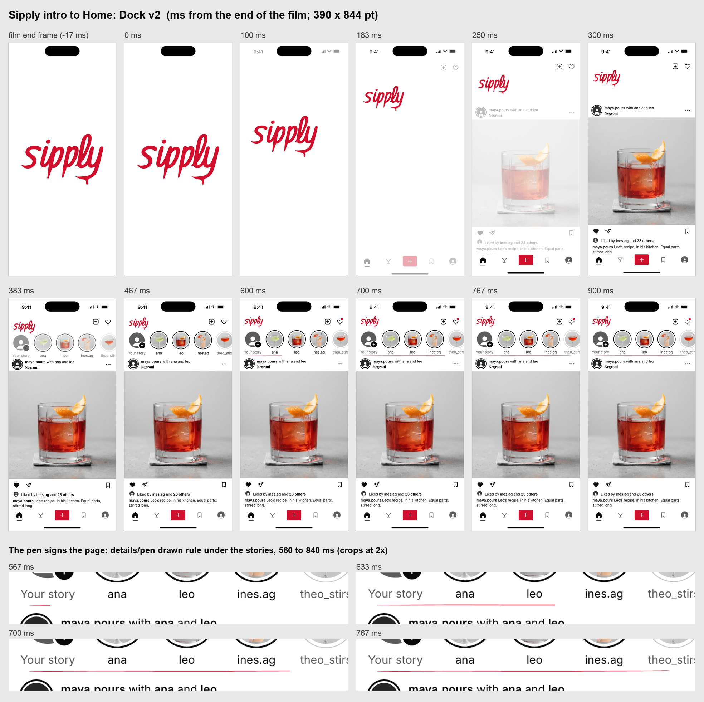
Hairline curtain v2
judges 20.5 / 30 · taste 5.5 · craft 6.5 · build 8.5A pen stroke runs out from under the drip's bead, parts into a double rule, and the white splits along it: the top half carries the logo up into the bar, the bottom half drops away, and Home develops in the gap. 820 ms in all, no red left by 400 ms.
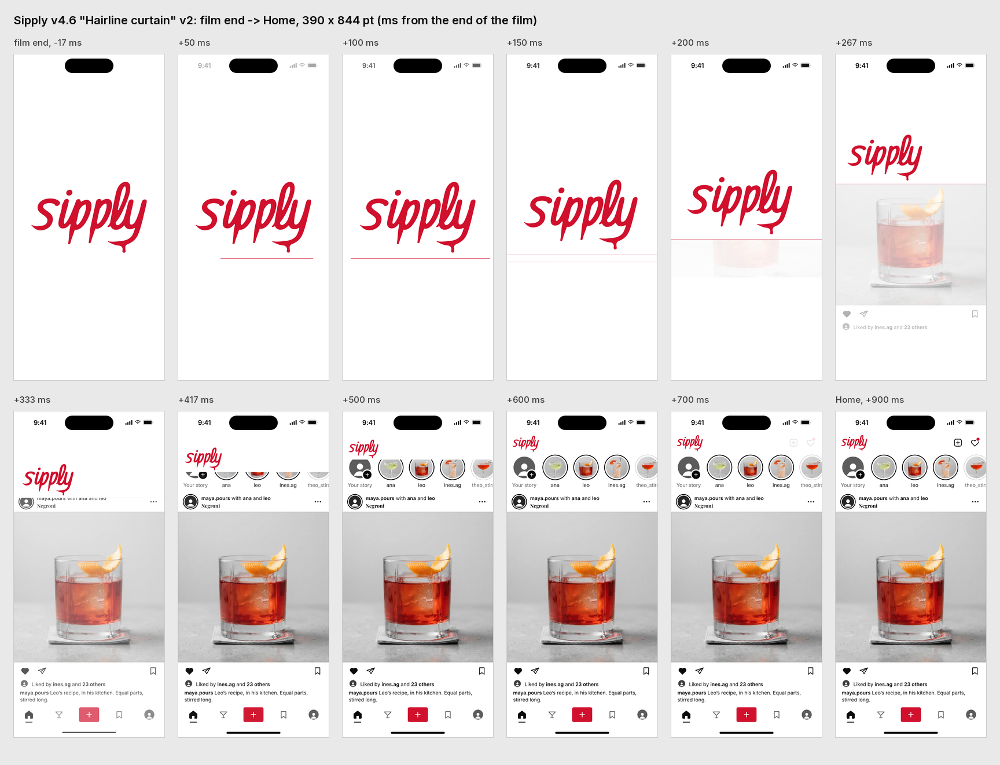
Also built, not taken forward
The drop 19 / 30
The logo's drip falls and becomes the + key. The most ownable idea, but on a phone the 9 pt drop is a speck falling one way while the wordmark flies the other, and it is the costliest and riskiest to build.
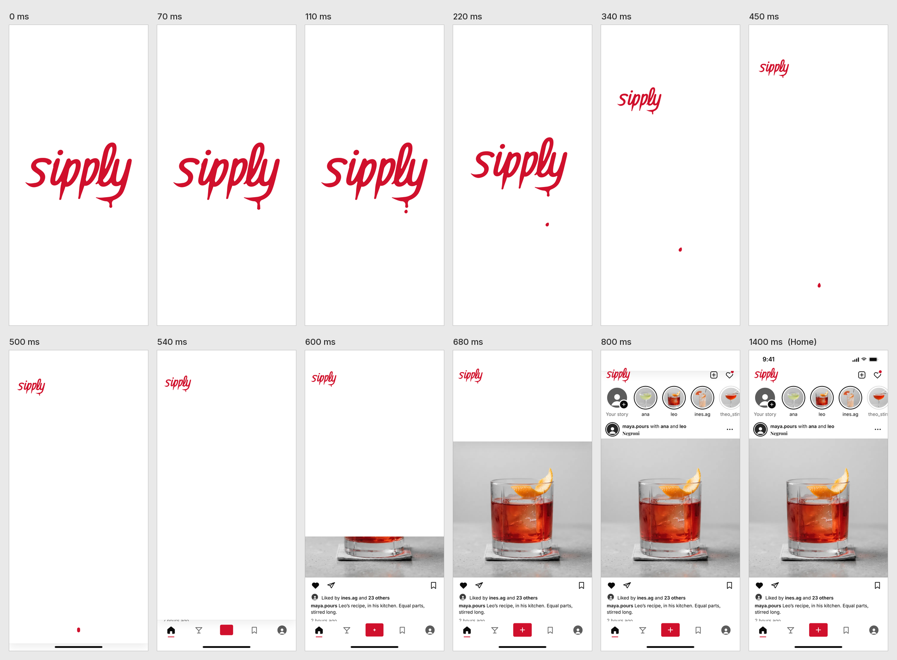
Recommendation
Details: Pen marks. It is the only system that is Sipply's own (the logo's hand at hairline weight), it answers “too bland” without adding anything to read, and one mark per screen keeps to “less stuff”.
Transition: Dock. The film's wordmark becomes the app's wordmark, so the motion feels inevitable rather than decorative, and its closing beat is Pen's rule drawing on, so the two choices read as one idea.